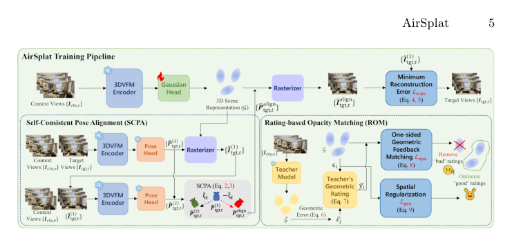

AirSplat
简单摘要
摘要应简明扼要地概括论文的内容。虽然摘要没有固定长度限制，但建议将摘要限制在 150 字左右。请包含关键字，如下例所示。这是 LNCS 会议论文所必需的。第一个关键字 第二个关键字 第三个关键字


简而言之，这篇论文关注的核心是：摘要应简明扼要地概括论文的内容。虽然摘要没有固定长度限制，但建议将摘要限制在 150 字左右。请包含关键字，如下例所示。这是 LNCS 会议论文所必需的。第一个关键字 第二个关键字 第三个关键字
本文档作为向 ECCV 提交的示例。它说明了作者在提交论文时必须遵循的格式。同时，它还详细介绍了论文提交的各个方面，包括保留匿名性以及如何处理双重提交。我们建议作者仔细阅读本文档。该文件基于 Springer LNCS 指令以及多年来制定的 ECCV 政策。
核心创新
综合引言与方法部分，这篇论文的核心创新可以概括为以下几方面：
1）问题定义与研究动机
本文档作为向 ECCV 提交的示例。它说明了作者在提交论文时必须遵循的格式。同时，它还详细介绍了论文提交的各个方面，包括保留匿名性以及如何处理双重提交。我们建议作者仔细阅读本文档。该文件基于 Springer LNCS 指令以及多年来制定的 ECCV 政策。
2）方法框架与核心模块
AirSplat：鲁棒前馈 3D 高斯泼溅的对齐和评级 Minh-Quan Viet Bui⋆、Jaeho Moon⋆和 Munchurl Kim KAIST {bvmquan, jaeho.moon, mkimee}@kaist.ac.kr https://kaist-viclab.github.io/airsplat-site 图 1：我们提出的 AirSplat 采用 3D-VS-VFM使用自洽姿势对齐 (SCPA) 和基于评级的不透明度匹配 (ROM) 来解决固有的姿势几何差异和多视图不一致。我们的 AirSplat 有效消除了基线 DA3 [20] 产生的“漂浮物”（红色框）和模糊伪像（黄色虚线框），呈现清晰、结构一致的新颖视图。抽象的。虽然 3D 视觉基础模型 (3DVFM) 在视觉几何估计方面表现出了卓越的零样本能力，但将其直接应用于可推广的新颖视图合成 (NVS) 仍然具有挑战性。在本文中，我们提出了 AirSplat，这是一种新颖的训练框架，可以有效地将 3DVFM 的稳健几何先验适应高保真、无姿势 NVS。我们的方法引入了两个关键的技术贡献：（1）自洽姿势对齐（S…
3）实验设计与工程价值
AirSplat：鲁棒前馈 3D 高斯泼溅的对齐和评级 Minh-Quan Viet Bui⋆、Jaeho Moon⋆和 Munchurl Kim KAIST {bvmquan, jaeho.moon, mkimee}@kaist.ac.kr https://kaist-viclab.github.io/airsplat-site 图 1：我们提出的 AirSplat 采用 3D-VS-VFM使用自洽姿势对齐 (SCPA) 和基于评级的不透明度匹配 (ROM) 来解决固有的姿势几何差异和多视图不一致。我们的 AirSplat 有效消除了基线 DA3 [20] 产生的“漂浮物”（红色框）和模糊伪像（黄色虚线框），呈现清晰、结构一致的新颖视图。抽象的。虽然 3D 视觉基础模型 (3DVFM) 在视觉几何估计方面表现出了卓越的零样本能力，但将其直接应用于可推广的新颖视图合成 (NVS) 仍然具…
技术细节
下面按照论文的方法章节结构展开，重点说明模型的关键模块、公式设计和训练策略。
AirSplat：鲁棒前馈 3D 高斯泼溅的对齐和评级 Minh-Quan Viet Bui⋆、Jaeho Moon⋆和 Munchurl Kim KAIST {bvmquan, jaeho.moon, mkimee}@kaist.ac.kr https://kaist-viclab.github.io/airsplat-site 图 1：我们提出的 AirSplat 采用 3D-VS-VFM使用自洽姿势对齐 (SCPA) 和基于评级的不透明度匹配 (ROM) 来解决固有的姿势几何差异和多视图不一致。我们的 AirSplat 有效消除了基线 DA3 [20] 产生的“漂浮物”（红色框）和模糊伪像（黄色虚线框），呈现清晰、结构一致的新颖视图。抽象的。虽然 3D 视觉基础模型 (3DVFM) 在视觉几何估计方面表现出了卓越的零样本能力，但将其直接应用于可推广的新颖视图合成 (NVS) 仍然具有挑战性。在本文中，我们提出了 AirSplat，这是一种新颖的训练框架，可以有效地将 3DVFM 的稳健几何先验适应高保真、无姿势 NVS。我们的方法引入了两个关键的技术贡献：（1）自洽姿势对齐（SCPA），一种训练时反馈循环，可确保像素对齐监督以解决姿势几何差异； (2) 基于评级的不透明度匹配 (ROM)，它利用稀疏视图 NVS 教师模型中的局部 3D 几何一致性知识来过滤掉退化的图元。大规模基准测试的实验结果表明，我们的方法在重建质量方面显着优于最先进的无姿势 NVS 方法。我们的 AirSplat 强调了采用 3DVFM 实现同步视觉几何估计和高质量视图合成的潜力。关键词：3D重建·3D视觉·高斯溅射⋆共同第一作者（同等贡献）。 arXiv:2603.25129v1 [cs.CV] 2026 年 3 月 26 日 2 Bui 等人。 1 引言 随着 3D 高斯分布 (3DGS) [17] 的出现及其后续进展 [4,10,19,30,45,51]，新颖视图合成 (NVS) 领域经历了范式转变。为了克服耗时的每个场景优化的瓶颈，最近的前馈架构 [5,8,46,55] 直接从稀疏上下文视图中预测 3D 场景参数。然而，对校准姿势的依赖限制了“野外”适用性，而几种无姿势前馈方法 [11,16,34,53] 仍然从根本上限制于稀疏视图输入。
为了解决这个问题，最近的工作 [13,15,31,47,48] 利用 3D 视觉基础模型 (3DVFM)（例如 Mast3r [18]、VGGT [39] 和 π3 [43]）强大的零镜头深度和姿态估计功能。这些方法微调或提取 3DVFM，直接从原始输入图像联合推断场景 3D 高斯基元和相机参数。然而，这使网络偏向视图合成目标，导致基础几何估计任务的性能下降。最近的统一框架，我们称为具有视图合成的 3DVFM (3D-VS-VFM)，例如 WorldMirror [24] 和 DepthAnything3 [20]，结合了 3DGS 头来执行几何估计和 NVS。尽管进行了这种整合，仍会产生高保真新颖的视图
$$ E = m\cdot c^2. \label{eq:important} $$
公式：E = m\cdot c^2。 \label{eq:重要} 上下：t在单独的一行上（上面和下面有额外的行或半行空间）。方程式应编号以供参考。贡献内容中的数字应该是连续的，数字括在括号内并设置在右边距中。例如，请不要在编号中包含部分计数器......
$$ \psi (u) & = \int_{0}^{T} \left[\frac{1}{2} \left(\Lambda_{0}^{-1} u,u\right) + N^{\ast} (-u)\right] \text{d}t \; \\ & = 0 $$
公式：\psi (u) & = \int_{0}^{T} \left[\frac{1}{2} \left(\Lambda_{0}^{-1} u,u\right) + N^{\ast} (-u)\right] \text{d}t \; \\ & = 0 上下：在图前进行断点，请确保上一页已完全填满。公式 显示的方程或公式居中并设置在单独的行上（上方和下方有额外的行或半行空间）。方程式应编号以供参考。贡献中的数字应该是连续的...
把全文方法串起来看，这篇论文的逻辑基本都遵循同一条主线：先把输入组织成更容易处理的表示，再通过模型结构和损失函数把这个表示推向目标输出，最后用可视化与数值实验共同证明该设计有效。
实验结论
实验部分主要回答两个问题：第一，方法是否真的优于已有基线；第二，这种优势来自哪一个设计决策。
AirSplat：鲁棒前馈 3D 高斯泼溅的对齐和评级 Minh-Quan Viet Bui⋆、Jaeho Moon⋆和 Munchurl Kim KAIST {bvmquan, jaeho.moon, mkimee}@kaist.ac.kr https://kaist-viclab.github.io/airsplat-site 图 1：我们提出的 AirSplat 采用 3D-VS-VFM使用自洽姿势对齐 (SCPA) 和基于评级的不透明度匹配 (ROM) 来解决固有的姿势几何差异和多视图不一致。我们的 AirSplat 有效消除了基线 DA3 [20] 产生的“漂浮物”（红色框）和模糊伪像（黄色虚线框），呈现清晰、结构一致的新颖视图。抽象的。虽然 3D 视觉基础模型 (3DVFM) 在视觉几何估计方面表现出了卓越的零样本能力，但将其直接应用于可推广的新颖视图合成 (NVS) 仍然具有挑战性。在本文中，我们提出了 AirSplat，这是一种新颖的训练框架，可以有效地将 3DVFM 的稳健几何先验适应高保真、无姿势 NVS。我们的方法引入了两个关键的技术贡献：（1）自洽姿势对齐（SCPA），一种训练时反馈循环，可确保像素对齐监督以解决姿势几何差异； (2) 基于评级的不透明度匹配 (ROM)，它利用稀疏视图 NVS 教师模型中的局部 3D 几何一致性知识来过滤掉退化的图元。大规模基准测试的实验结果表明，我们的方法在重建质量方面显着优于最先进的无姿势 NVS 方法。我们的 AirSplat 强调了采用 3DVFM 实现同步视觉几何估计和高质量视图合成的潜力。关键词：3D重建·3D视觉·高斯溅射⋆共同第一作者（同等贡献）。 arXiv:2603.25129v1 [cs.CV] 2026 年 3 月 26 日 2 Bui 等人。 1 引言 随着 3D 高斯分布 (3DGS) [17] 的出现及其后续进展 [4,10,19,30,45,51]，新颖视图合成 (NVS) 领域经历了范式转变。为了克服耗时的每个场景优化的瓶颈，最近的前馈架构 [5,8,46,55] 直接从稀疏上下文视图中预测 3D 场景参数。然而，对校准姿势的依赖限制了“野外”适用性，而几种无姿势前馈方法 [11,16,34,53] 仍然从根本上限制于稀疏视图输入。
为了解决这个问题，最近的工作 [13,15,31,47,48] 利用 3D 视觉基础模型 (3DVFM)（例如 Mast3r [18]、VGGT [39] 和 π3 [43]）强大的零镜头深度和姿态估计功能。这些方法微调或提取 3DVFM，直接从原始输入图像联合推断场景 3D 高斯基元和相机参数。尽管如此，这还是有偏见的
- 方法在核心指标上的优势与结构设计和训练目标直接相关；
- 消融实验表明，拿掉关键模块后性能与结果质量都有明显回落；
- 论文不仅比较数值，也关注可视化质量、稳定性和泛化能力等更贴近真实使用的信号。
理解评价
论文最后得出结论。手稿的页码。手稿的页码。手稿的页码。手稿的页码。手稿的页码。这是最后一页。现在我们已经达到了 ECCV 提交的最大长度（不包括参考文献和致谢）。参考文献应在正文之后立即开始，但如果需要，可以继续经过第 14 页。
如果把它当成研究参考，建议重点关注三件事：第一，这套方法真正依赖的归纳偏置是什么；第二，实验中真正拉开差距的模块是哪一个；第三，它的局限究竟来自数据、算力还是监督信号本身。
以下相关论文可以作为进一步追踪的入口：